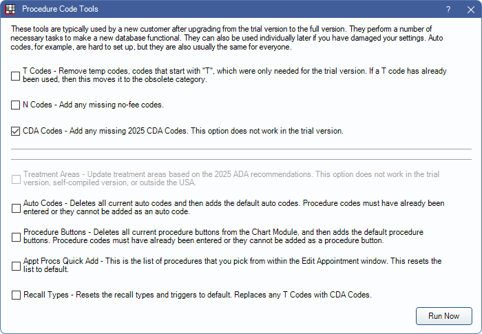

Canada Procedure Code Tools
The Procedure Code Tool can automatically update the Procedure Codes with any missing CDA codes, missing N codes, default auto codes, add default Procedure Buttons, and remove any temporary codes (T codes) installed with the trial version.
For Canada users, in the Procedure Codes window, click Tools.
- Use caution when selecting and running tools so that customized Auto Codes and Procedure Buttons are not reset.
- Codes from the Canadian Dental Hygienist Association (CDHA) are not automatically included in Open Dental. Contact Open Dental Support to quickly import most procedure codes.
- Codes from the Denturist Association of Canada (DAC) are not included in Open Dental and must be created manually if needed.
Check the tools to run, then click Run Now. A message displays when updates are done.
T codes: Remove all temp codes (T) that were only needed for the trial version.
N Codes: Add missing no-fee procedure codes.
CDA Codes: Add missing CDA procedure codes.
- Some newer codes may not be available.
- This tool does not update existing codes. Contact Open Dental for possible solutions if existing codes need to be updated.
- Additional codes can be added manually as needed. See Add Procedure Code for details.
Auto Codes: Generate Canada Auto Codes or reset to the default Auto Codes.
Procedure Buttons: Generate Procedure Buttons or reset to the default Procedure Buttons.
Appt Procs Quick Add: Generates single-click buttons in the Appointment Edit window. See Canada Definitions: Appt Procs Quick Add.
Recall Types: Resets recall types to the default. See Canada Recall Types.